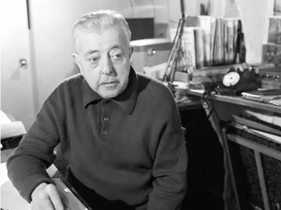
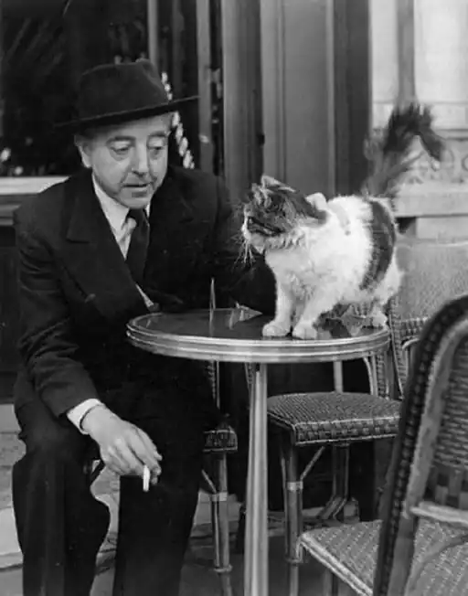
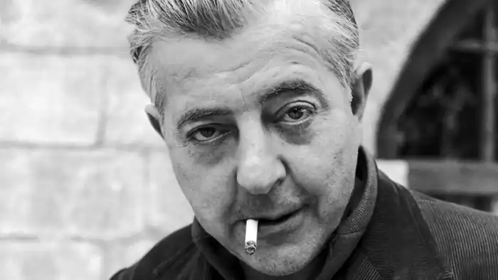

Народився 4 лютого 1900 року в Неї-сюр-Сен. Батько був літератором, мати любила читати дітям казки. У Жака був старший брат Жан, який народився в 1898 році та в 1915 році помер від тифу. Молодший брат, П'єр (нар. 1906), став кінорежисером. Родина Превера була незаможня, тож ще з дитинства він спізнав життя в скруті, примусове переселення сім'ї за невчасну сплату квартплати. Вже у 14 років Жак був змушений полишити школу й почати працювати. За перші роки трудового досвіду змінив безліч професій. У 1918 році був мобілізований та війна невдовзі скінчилася. Регулярну військову службу відбув у 1920—1922 роках спершу в Люневілі, а згодом у Туреччині.
У 1925 році одружився з Сімоною Дьєпп, яка була його подругою дитинства. Після десяти років спільного життя подружжя розлучилося в 1935 році. З 1925 по 1929 роки Жак Превер мешкав на Монпарнасі, де в його квартирі також проживали друзі з армійських часів — Ів Тангі та Марсель Дюамель. Квартира Превера невдовзі стала одним з найулюбленіших місць зустрічей сюрреалістів, а сам Превер затоваришував з Раймоном Кено та Андре Бретоном.
Та писати Превер почав після розриву з Бретоном у 1930 році. Тоді він надрукував у журналі "Біфюр" свій твір "Сімейні спогади, або Янгол-охоронець". Наступного року в журналі "Коммерс" з'явилася його "Спроба зобразити обід голів у Парижі, у Франції". З 1932 року Превер працював у театральній трупі "Октобр" (Жовтень) як автор діалогів. Цього ж року почалася його робота в кіно в ролі сценариста. Ім'я Превера як кінодраматурга стало відомим після фільмів "Рідкісний птах" (1935) та "Злочин пана Ланжа" (1936, режисер Жан Ренуар). Завдяки схвальним оцінкам Анрі Мішо, Жак Превер вирішив працювати не лише для кіно, а далі писати вірші. На момент мобілізації в 1940 році Жак потрапив до лікарні з запаленням апендициту й таким чином уник призову. З Жанін, з якою Превер жив цивільним шлюбом 1943 року, у нього в 1946 році народилася єдина донька Мішель. У настуні роки Превер написав ряд дитячих книжок, що опосередковано були присвячені доньці Мішель. Багато вірші Превера було покладено на музику. Особливо популярними стали пісні на мелодії композитора Жозефа Косма. Світову популярність здобула пісня "Les Feuille mortes" (Зів'яле листя, виконавці: Едіт Піаф, Ів Монтан). Загалом з 1928 по 1972 роки було зроблено 175 записів пісень на слова Превера. Збірка Превера "Слова" (1946) стала чи не найбільшим успіхом поета. До сьогодні вона продалася накладом понад 3 мільйони примірників, не рахуючи перекладів на кілька десятків мов світу. У 1948 році, внаслідок нещасного випадку — Превер випав з другого поверху офісу французького національного радіо на Єлисейських полях — він кілька тижнів перебував у стані коми. Антиконформізм Превера сприяв його зближенню з Борисом Віаном, а з 1955 року вони стали сусідами в Сіте Верон на Монмартрі. Завдяки Віану Превер зблизився з діячами Колежу Патафізики, до якого вступив у 1951 році, а в 1953 році одержав ранг "сатрапа". Пристрасть до візуального мистецтва підштовхгула Превера до співробітництва в 1950-і роки з художниками та фотографами: Жоан Міро, Макс Ернст, Пікассо, Андре Війє, Ізіс, Рібмон-Дессень. У наступні роки регулярно виходили нові поетичні й колажні книжки та нові фільми з діалогами Превера. 1974 року Превер став дідусем — в його доньки народилася дівчинка Ежені. В останні роки життя Превер втратив багато друзів: у 1973 році померли Пікассо і Бертеле, у 1975 — Марсель Дюамель. Сам Жак Превер помер від раку легень 11 квітня 1977 року й був похований в Омонвіль-ла-Петіт, в департаменті Манш. Жак Превер мав успіх не лише серед пересічних читачів та любителів кіно й пісні, майже всі знайомі колеги по перу залишили схвальні відгуки, серед них такі різні письменники, як Робер Деснос, Раймон Кено, Жорж Батай, Поль Елюар, Луї Арагон, Андре Бретон. Сен-Жон Перс підтримав поетичні проби Превера й відкрив йому можливість публікації в "Коммерс", Антонен Арто захоплювався ним як драматургом, Анрі Мішо високо поціновував його Пісню в крові, Рене Шар — сценарій Превера "Коханці з Верони". Колеги з трупи "Жовтень" у спогадах підкреслювали надзвичайну кумедність та критичну ефективність його діалогів. Популярності Превера як поета й автора багатьох пісень сприяла зокрема й сама суспільна атмосфера у Франції після Визволення. Свою роль тут зіграла й преса, адже багато друкованих органів очолили колишні учасники антифашистського опору, серед яких у Превера було чимало друзів. Есеїст і критик Гаетан Пікон назвав творчість Превера "гідним прикладом народної поезії". У 50-і роки популярність Превера зросла зокрема і через масові наклади його збірок у новому на той час кишеньковому форматі. Щоправда такі масові тиражі дещо знизили інтерес до Превера в університетських колах. Під час революційних подій травня 1968 року нове нонконформістське покоління надихалося творами Превера для своїх текстів та графіті. 1992 року визнання прийшло й з більш офіційного боку: твори Превера були опубліковані в найпрестижнішій книжковій серії Франції Бібліотека Плеяди. У 1997 році Ален Пуланже й Жанін Мар Пезе створили великий документальний фільм про Жака Превера, який демонструвався з нагоди 20-ої річниці смерті поета. З 50-х років і до тепер зберігається великий інтерес до творчості Превера серед представників сучасної музики й співу. Окрім вже згаданих Едіт Піаф та Іва Монтана, пісні на слова Превера в своєму репертуарі мали Катрін Соваж, Жульєтта Греко, Марлен Дітріх, Сімона Сіньйоре, Тіно Россі, Серж Генсбур. Останній ще 1957 року присвятив поетові "Пісню Превера". Досі численні тексти Превера використовують сучасні виконавці, зокрема гурти стилю реп. На честь письменника названо астероїд 18624 Превер.